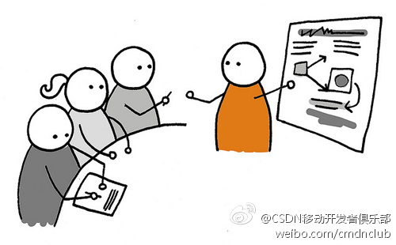

Ada李力
2013-07-10

Ada李力
2013-07-10
回复@soledadmg:都有的东西就表明这种做法对？ //@soledadmg:其实审核也是考虑到用户的体验了，并不单单是为了减少工作量，验证码这个在很多网站论坛都有，用户一定就会因为新加了验证码而觉得反感吗？

Ada李力
2013-07-10
大家都来拥抱吧。@CSDN_CODE 加油。
@朱永光_末希:
微软完全拥抱Git了。之前在CodePlex支持Git，在TFService中从3月份开始也支持Git。对于VS2012，微软现在提供了Git的VSIX插件。未来，TFServer 2013直接内置Git Server（可兼容任意Client），在VS2013直接内置Git Client功能。
Ada李力
2013-07-10
@CSDN云计算俱乐部:
2013年7月12日，广州，CSDN云计算俱乐部下午茶--智慧城市与智能家居 - 会议 - CSDN.NET  网页链接 中科院广研所智慧城市研究中心CTO李引，为大家分享一些颇为好评的项目实践。之后我们将通过开放空间会议的形式，让各位与会者分别探讨一些相关的实践，共同挖掘未来可能的机会。
网页链接 中科院广研所智慧城市研究中心CTO李引，为大家分享一些颇为好评的项目实践。之后我们将通过开放空间会议的形式，让各位与会者分别探讨一些相关的实践，共同挖掘未来可能的机会。
Ada李力
2013-07-10
实战工作坊，是很受欢迎的一种活动形式。参会者在亦学亦练，亦获得指导反馈的环境中，收获最大。只是这种形式对活动设计和讲师控场能力，要求比较高。
@CSDN移动开发者俱乐部:
CSDN移动俱乐部：设计周末精益版 - Lean UX实战工作坊（深圳 @柴火创客空间 7月13日）@ThoughtWorks 体验设计师，Running Lean译者 @Ben-oni 将通过一个产品设计实战，帮助大家形成问题导向的思维，体验精益创业法和用户体验设计。小型体验式工作坊，仅限20人。详情：网页链接
- 
Ada李力
2013-07-10
之前小规模活动高的活动叫下午茶。到了广东，入乡随俗，改早茶会了。
@CSDN云计算俱乐部:
2013年7月14日，周日，深圳，CSDN云计算俱乐部 早茶会-畅谈大数据 。本次活动将邀请深圳做云计算和大数据的朋友，共同探讨数据平台建设、架构、核心技术点、技术发展规划、以及商业化案例分析。嘉宾来自：迅雷、金蝶、北航深研院、美嘉汇信、桉树Eucalyptus等 CSDN.NET 网页链接

Ada李力
2013-07-10
鼎鼎大名的@StephanieYR 你都不认识，亏你还以蟒蛇社区大妈自居，好好做做功课。
Ada李力
2013-07-10
IUW, 星座学都搬出来了。 //@三马: 大家都是处女座，我肯定会尽可能促成多方共赢和双方的长远合作，具体看投资人的接受程度，以及我们直接沟通以后的合作定位 //@StephanieYR: 事情大条了
//@三马: 大家都是处女座，我肯定会尽可能促成多方共赢和双方的长远合作，具体看投资人的接受程度，以及我们直接沟通以后的合作定位 //@StephanieYR: 事情大条了 ——>要是我在融资报告里是不是给多批点啊？还是直接pass？@经纬张颖 //@Ada李力:
——>要是我在融资报告里是不是给多批点啊？还是直接pass？@经纬张颖 //@Ada李力: